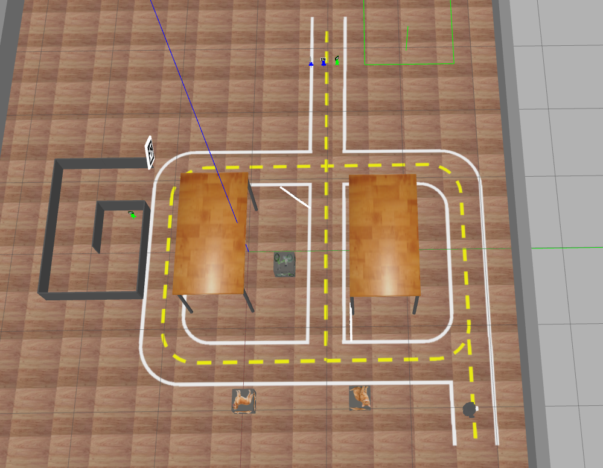

Projeto - Missão na 404
O objetivo do projeto é programar nosso robô para cumprir um conjunto de missões na sala 404. Utilizaremos o cenário apresentado a seguir.

Os grupos, que podem ser compostos por até quatro integrantes, deverão trabalhar em conjuto no repositório do GitHub Classroom disponibilizado.
Link para repositório do projeto GitHub Classroom
Data de Entrega: 03/11 às 23:59h
Instruções gerais
Aviso 1: Sempre desenvolvam nos arquivos .py dos respectivos exercícios.
Aviso 2: Lembre-se de realizar commit e push no seu repositório até o horário limite de entrega.
Aviso 3: Preencha o nome completo dos integrantes do seu grupo no arquivo README.md do seu repositório.
Aviso 4: Além de seu repositório, para todas as missões os grupos devem gravar um vídeo do seu robô executando a tarefa. O vídeo deve ser postado no Youtube.
No arquivo README.md do seu repositório existe o campo Link do Vídeo onde você deve preencher com apenas o link de cada video no youtube. Certifique-se de que o vídeo está público e que o link está correto. NUNCA de commit no vídeo, somente adicione o link.
Aviso 5: Para o projeto, as entregas são feitas utilizando o robô real. Entregas no simulador serão aceitas apenas para a missão 1, conquistando nota máxima de 2,5 pontos.
Aviso 6: São aceitos videos com entregas parciais que comprovam que seu robô é capaz de realizar parte das tarefas. Inclua o link dos vídeos no README com um comentário.
Aviso 7: É possível realizar a entrega parcial de missões avançadas, descrevendo no README o que falta para completar a missão.
Configuração do Pacote (ROS 2)
- Preparação Inicial: Primeiro, aceite o convite do GitHub Classroom e clone o repositório dentro da pasta
colcon_ws/src/no seu SSD. - Criação do Pacote ROS 2: Dentro do diretório do seu repositório, crie um novo pacote chamado
projeto_robcomp.- Dica: Para utilizar os modulos desenvolvidos no módulo 3, inclua o pacote
robcomp_utilcomo dependência do seu pacote, e então, importe como nos exemplos do módulo 3.
- Dica: Para utilizar os modulos desenvolvidos no módulo 3, inclua o pacote
Atualização dos Repositórios
Em um novo terminal, execute os comandos a seguir linha por linha.
cd ~/colcon_ws/src/my_simulation
git stash
git pull
cb
Mapa Simulado
Para inicializar o mapa do projeto, em um terminal digite:
ros2 launch my_gazebo pista-25B.launch.py
Descrição das Missões
O projeto é composto por 3 missões de complexidade crescente, envolvendo tanto o design de software quanto a utilização dos sensores e comportamentos do robô. É preciso concluir todas as missões anteriores para obter a nota da missão subsequente.
Cada missão deverá ser registrada em um ou mais vídeos, com o link adicionado no arquivo README e o codigo deve ser versionado utilizando o Releases do GitHub, com a tag do conceito atingido.
As missões envolvem os seguintes elementos:
-
Pista: O robô deve permanecer dentro da pista, retornando a ela o mais rápido possível caso saia.
-
Creepers: Bonecos semelhantes aos do Minecraft, que devem ser transportados até as Drop Areas.
- Quatro Creepers estão posicionados no Creeper Place com duas cores diferentes e dois ids diferentes.
-
Slalom: Um trecho da pista com obstáculos que o robô deve atravessar sem bater.
-
Drop Areas: Placas com imagens detectáveis pela Yolo, local onde os Creepers devem ser depositados. Elas são colocadas em locais fixos fora da linha branca. Apenas a imagen entre os Slalom é fixa, sendo que as outras duas imagens podem trocar de lugar.
-
Placas: AprilTags de
ID100,150e250. O grupo pode coloca-las em qualquer lugar, fora da linha branca, para auxiliar na navegação.
Dica 1
No simulador, você pode alterar a posição das placas no arquivo pista25B.world, em um terminal digite:
code /home/borg/colcon_ws/src/my_simulation/my_gazebo/worlds/pista25B.world
Para completar uma missão, o grupo deve:
-
Chamar um professor ou tecnico para validar a pista e selecionar o Creeper e a "Drop Area" (se aplicável).
-
Sua classe deve receber como entrada, cor do Creeper, ID do Creeper e "Drop Area".
-
Gravar o robô realizando a missão na pista real.
-
Incluir o link do vídeo no README do seu repositório e criar um Release com a tag referente a última missão concluída.
-
Cada missão deve ser concluída em menos de 15 minutos.
-
Deixar o Creeper em uma "Drop Area" inclui:
a. Parar próximo à "Drop Area".
b. Posicionar-se de frente da "Drop Area".
c. Aproximar-se até ficar a 0.5m de distância.
d. Abaixar a garra e soltar o Creeper em pé.
e. Retornar à pista sem derrubar o Creeper.
-
Ao dar commit no vídeo e no código, peça para um professor ou técnico validar a missão na planilha como "Concluída".
Missão 1 (Simulador e Robô Real)
Atenção
Realizar a Missão no robô real - Simulador pode ser entrega, mas a nota é reduzida.
Nesta missão, o robô deve pegar um Creeper específico (ID e cor) e então retornar para a posição inicial. Os seguintes passos devem ser realizados:
-
A classe recebe a cor e o ID do Creeper desejado. a. Adicione
inputna funçãomain()para receber a cor e o ID do Creeper desejado. b. Passe esses valores ao instanciar a classe que implementa a missão. -
O robô sai da posição inicial e visita o Creeper Place, local onde estão os Creepers.
-
O robô deve pegar o Creeper desejado.
-
O robô deve retornar para a posição inicial.
-
Na posição inicial, o robô deve soltar o Creeper em pé, se posicionar para fechar e abaixar a garra sem derrubar o Creeper.
-
Finalmente o código deve finalizar a execução sem nenhum erro.
Requisitos de projeto de software:
-
Uso de Classes: O código deve ser estruturado de forma orientada a objetos, utilizando classes para organizar as funcionalidades
-
Máquina de Estados: Implemente uma máquina de estados para gerenciar as diferentes etapas da missão;
-
Controle Proporcional: Utilize técnicas de controle proporcional para manter o robô na trajetória desejada, especialmente ao seguir a linha.
Nota final desta missão: 5,0 - Simulador: 2,5
Missão 2 (Apenas no Simulador)
Atenção
Realizar a Missão no robô real
Essa missão expande a missão anterior, mas agora o robô deve pegar o Creeper específico, procurar e entrega-lo em uma "Drop Area" desejada e então retornar para a posição inicial. Para este conceito, o robô não precisa passar pelo Slalom, sendo relevante apenas as outras duas pistas. Os seguintes passos devem ser realizados:
-
A classe recebe a cor e o ID do Creeper desejado e a "Drop Area" desejada. a. Adicione
inputna funçãomain()para receber o objetivo da missão. b. Passe esses valores ao instanciar a classe que implementa a missão. -
O robô sai da posição inicial e visita o Creeper Place, local onde estão os Creepers.
-
O robô deve pegar o Creeper desejado.
-
O robô deve procurar a "Drop Area" desejada dentre as duas pistas, com exceção da pista do Slalom.
-
O robô deve deixar o Creeper na "Drop Area" desejada.
-
O robô deve retornar para a posição inicial, sem derrubar o Creeper.
-
Finalmente o código deve finalizar a execução sem nenhum erro.
Requisitos de projeto de software:
- Mesmo da missão 1
Nota final desta missão: 6,0
Missão 3 (Simulador e Robô Real)
Atenção
Realizar a Missão no robô real
Essa missão expande a missão anterior, mas agora o robô deve pegar um Creeper específico (ID e cor), procurar e entrega-lo para um "Drop Area" Creeper desejada que nessa missão está entre os Slalom, e então retornar para a posição inicial.
Os seguintes passos devem ser realizados:
-
A classe recebe a cor e o ID do Creeper desejado e a
"Drop Area"Creeper desejada. a. Adicioneinputna funçãomain()para receber o objetivo da missão. b. Passe esses valores ao instanciar a classe que implementa a missão. -
O robô sai da posição inicial e visita o Creeper Place, local onde estão os Creepers.
-
O robô deve pegar o Creeper desejado.
-
O robô deve passar pelo Slalom até a
"Drop Area"Creeper desejada. -
O robô deve deixar o Creeper na
"Drop Area"Creeper desejada. -
O robô deve passar novamente pelo Slalom para retornar para a posição inicial, sem derrubar o Creeper.
-
Finalmente o código deve finalizar a execução sem nenhum erro.
Requisitos de projeto de software:
- Mesmo da missão 2
Nota final desta missão: 10,0 (Real) -- 8,0 (Simulador)